Unidad 4 · Sesión 1
Ciencias de la Salud · Cuarto medio
Hoy puedes ganar hasta $27.000 Hipopesos
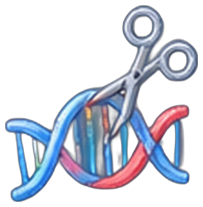
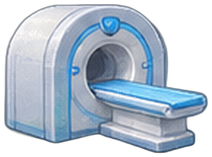
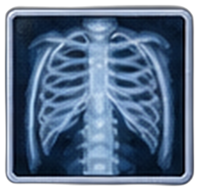
Objetivo de la sesión
Recordar
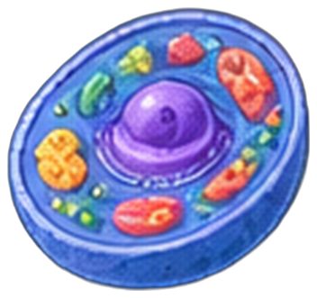
Nombrar las cinco áreas y dar un ejemplo de cada una.
Comprender
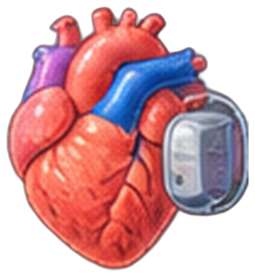
Explicar cómo cada área ayuda a resolver un problema de salud.
Comprender
Presentar una carrera con Afirmación, Evidencia y Razonamiento.
Unidad 4 · Sesión 1
2
Misiones de la sesión
$1.000
Inicio
Compartes la tecnología que elegiste con el curso
hasta $7.000
Verifica
$1.000 por acierto, y $2.000 más si aciertas las cinco
hasta $12.000
Tu pitch
Hasta $4.000 por cada criterio de la pauta
$3.000
Pitch elegido
Tu pitch es el que pasa al curso desde tu grupo
$2.000
Escucha
Anotas el área y la tecnología de cada pitch
$2.000
Ticket de salida
Lo completas con el porqué
Total posible en esta sesión
$27.000 Hipopesos
Unidad 4 · Sesión 1
3
Inicio · 8 min
+ $1.000 por compartir
1
Escribe una en tu cuaderno.
2
Compárala con quien tienes al lado y elijan la más sorprendente.
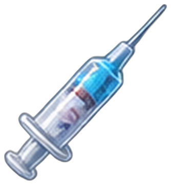
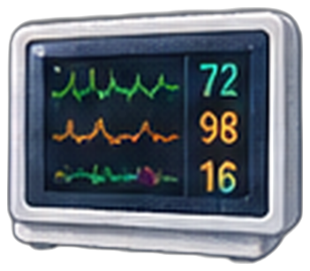
Unidad 4 · Sesión 1
4
Panorama · 27 min
Biotecnología
¿Pueden los seres vivos fabricar medicamentos?
Nanomedicina
¿Cómo llevar un fármaco justo a la célula enferma?
Medicina nuclear
¿Cómo ver y tratar con radiación en dosis pequeñas?
Imagenología
¿Cómo mirar dentro del cuerpo sin abrirlo?
Farmacología
¿Cómo actúa un fármaco y qué dosis es segura?
Unidad 4 · Sesión 1
5
Área 1 de 5
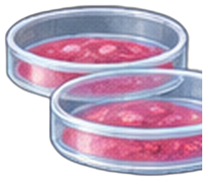
Qué es
Uso de células, microorganismos o sus moléculas para producir medicamentos, vacunas y tratamientos.
Ejemplo real
Bacterias modificadas genéticamente fabrican insulina humana, que reemplazó a la extraída de animales.
Carreras donde se trabaja
Biotecnología · Bioquímica · Biología
Unidad 4 · Sesión 1
6
Área 2 de 5
Qué es
Uso de materiales a escala nanométrica (una millonésima de milímetro) para diagnosticar, transportar fármacos o tratar.
Ejemplo real
Las vacunas de ARN mensajero contra el COVID-19 viajan en nanopartículas de lípidos que protegen el ARN y lo llevan a las células.
Carreras donde se trabaja
Ingeniería Biomédica · Química y Farmacia · Física o Química, con posgrado en nanotecnología
Unidad 4 · Sesión 1
7
Área 3 de 5
Qué es
Uso de sustancias radiactivas en dosis pequeñas para estudiar el funcionamiento de un órgano o tratar una enfermedad.
Ejemplo real
En un PET se inyecta glucosa marcada con flúor-18: las células que gastan más energía, como las de un tumor, la captan y se ven en la imagen.
Carreras donde se trabaja
Medicina, con especialidad en medicina nuclear · Tecnología Médica · Química y Farmacia
Unidad 4 · Sesión 1
8
Área 4 de 5
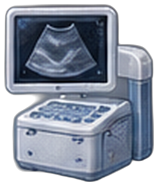
Qué es
Técnicas que muestran el interior del cuerpo sin abrirlo: rayos X, ecografía, escáner (TAC) y resonancia magnética.
Ejemplo real
La ecografía usa ultrasonido, sin radiación, para ver al bebé durante el embarazo o evaluar el corazón.
Carreras donde se trabaja
Tecnología Médica con mención en Imagenología · Medicina, con especialidad en radiología · Técnico en Radiología
Unidad 4 · Sesión 1
9
Área 5 de 5
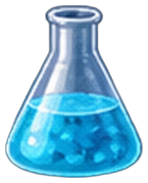
Qué es
Estudio de cómo actúan los fármacos en el organismo, qué dosis son eficaces y cuáles son seguras.
Ejemplo real
La penicilina bloquea la formación de la pared de las bacterias; como nuestras células no tienen pared, ataca a la bacteria sin dañarlas.
Carreras donde se trabaja
Química y Farmacia · Medicina · Bioquímica
Unidad 4 · Sesión 1
10
Verifica · 7 min
$1.000 por acierto · bono $2.000
1
Una resonancia magnética revela una lesión de rodilla.
2
Células cultivadas fabrican un anticuerpo anticáncer.
3
Nanopartículas llevan un fármaco directo al tumor.
4
Yodo radiactivo trata una enfermedad de la tiroides.
5
Se determina la dosis segura de un analgésico.
Medicina nuclear
Biotecnología
Imagenología
Farmacología
Nanomedicina
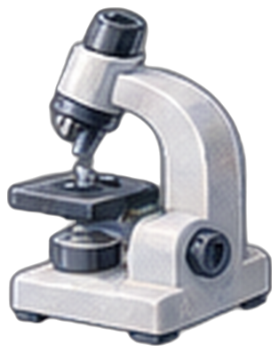
Unidad 4 · Sesión 1
11
Pitch · 18 min para preparar
Hasta $12.000 en tu pitch
Elige una carrera ligada a una de las cinco áreas y escribe el guion en tu cuaderno.
A
Afirmación
Un/a ______ contribuye a la salud al ______.
E
Evidencia
Una tecnología o un ejemplo real de su área.
R
Razonamiento
Cómo esa tecnología resuelve un problema de salud.
C
Camino
Qué se estudia, cuántos años dura y por qué te interesa.
Nombre exacto y duración de la carrera: mifuturo.cl
12
Evaluación formativa
| Criterio | Logrado | Medianamente logrado | Por lograr |
|---|---|---|---|
| Área y tecnología (Recordar) | Nombra el área y un ejemplo real correcto. | Nombra el área; el ejemplo es vago. | No identifica el área o el ejemplo es erróneo. |
| Explicación (Comprender) | Explica cómo la tecnología resuelve un problema de salud. | Describe la tecnología, pero no para qué sirve. | No relaciona la tecnología con la salud. |
| Carrera y claridad | Indica qué se estudia y se ajusta a unos 60 s. | Omite la formación o se excede bastante. | No logra presentar la carrera. |
Cada criterio paga: Logrado $4.000 · Medianamente logrado $2.000 · Por lograr $1.000
Unidad 4 · Sesión 1
13
Pitch en grupos · 20 min
+ $2.000 por escuchar
4–5
personas por grupo
60 s
por pitch
1
pitch por grupo pasa al curso
$3.000 a cada integrante
Mientras escuchas, anota en tu cuaderno el área y la tecnología que menciona cada compañero.
Unidad 4 · Sesión 1
14
Cierre · 10 min
+ $2.000
Completa en tu cuaderno:
El área que más me sorprendió fue ______, porque ______.
Próxima sesión
¿Quién financia la innovación en salud? Instituciones públicas y privadas.
Unidad 4 · Sesión 1
15